-
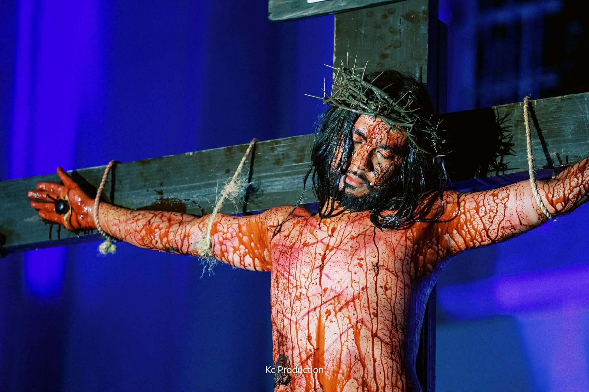
ABOUT SENAKULO
This digital archive is an output of the research project “Street Theater and Faith: A Senakulo Tradition in Sariaya, Quezon.” It contains selected photos and videos documenting the Senakulo as a form of religious street theater. The archive aims to preserve its cultural, artistic, and devotional significance for academic use and future reference.
Learn MoreCOLLECTION
CAST
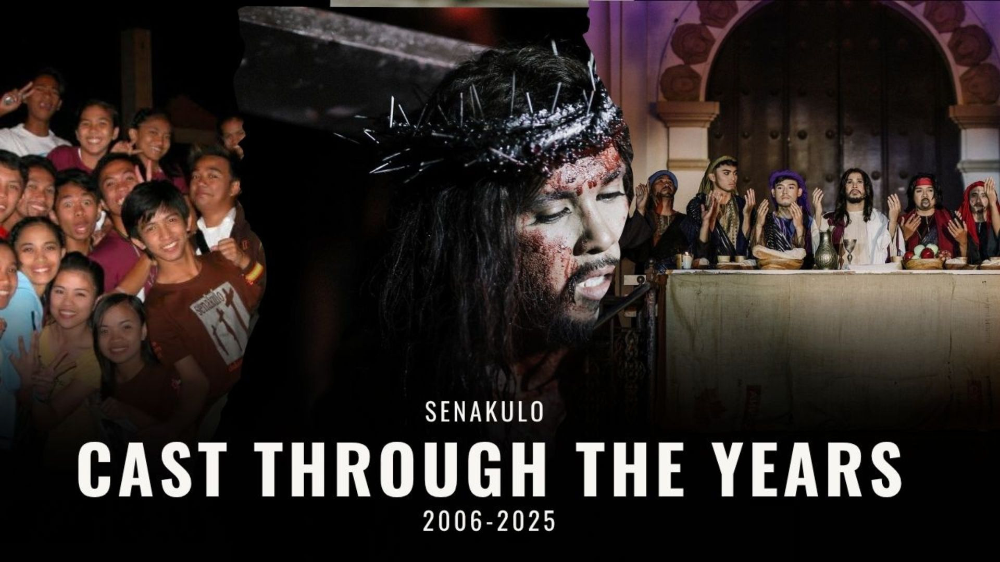 ViewSCRIPT
-

2009
Ang Kalbaryo ni Kristo - April 8, 2009
-

2010
March 31, 2010
-

2012
April 4, 2012
-

2015
April 1, 2015
-

2016
March 23, 2016
-

2017
Isang Panata Kay Kristo - April 12, 2017
-

2018
Mga Kabanata sa Buhay ni Kristo - March 28, 2018
-

2019
Ang Pasyon ni Kristo - April 17, 2019
-

2020
Ang Handog ng Ama - April 8, 2020
-

2023
Ang Hapis ng Isang Ina - April 5, 2023
The script of the Senakulo in Sariaya, Quezon was first conceptualized by Msgr. Melecio Verastigue, the parish priest, and later developed into a full production by the Sariaya Tourism Council under Rev. Fr. Andrew S. Hernandez. Inspired by comic book portrayals of the Calvary story, local religious traditions, and the biblical Passion narrative, the script was crafted to emphasize themes of faith, sacrifice, and redemption. Seamlessly combines theatrical storytelling with devotional practice, offering both participants and audiences a deeper and more meaningful experience of Holy Week.
PHOTOS
-

2009 - When Faith took the Streets
This year’s Senakulo emphasized storytelling through emotion and symbolism. These photos from 2009 Senakulo brings life to the passion, emotion and unity of Sariaya’s performers. Each scene radiates faith and artistry as the streets transform into a moving stage of devotion. With every act, costume and expression, the community once again proved that the Senakulo is more than a performance, it’s a celebration of faith and identity sharedby all.
-

2010 - The Fifth Staging
The 2010 Senakulo, staged by the Sariaya Theater Collective on March 31, drew a record crowd of locals and visitors. Widely praised as the best staging yet, it featured Bible-inspired scenes performed around town, creating a deeply emotional and spiritual atmosphere. Highlights included “Ang Pangangaral” and “Mga Himala”, where even young children participated, sparking curiosity and faith among the audience. The event reaffirmed Sariaya’s strong cultural and religious identity as a community where devotion and artistry come together.
-

2011 - Tradition Meets Innovation
The 2011 Senakulo showed how Sariaya’s beloved tradition continued to grow stronger each year. With improved sets, clearer storytelling, and more participants especially the youth. The performance became more vibrant and organized. Every scene reflected not only artistic progress but also the community’s deepening faith and unity in keeping the Senakulo spirit alive.
-

2012 - Expanding the Stage of Faith
The 2012 Senakulo performance brought new life to Sariaya’s Holy Week tradition with stronger performances and broader community support. This year’s play showed how faith and creativity continued to grow together. Each scene in the street captured not only the story of Christ’s Passion but also the spirit of unity and pride that defines Sariaya’s people.
-

2013 - Deepening Devotion
The 2013 Senakulo in Sariaya, Quezon reflected the community’s unwavering commitment to a long-standing Lenten tradition sustained through pure volunteerism. Participants devoted their time, talent, and effort to bring the Passion of Christ to life. The continued involvement of both seasoned and younger performers demonstrated how faith and collective spirit keep the Senakulo thriving as a living expression of Sariaya’s religious and cultural identity.
-

2015 - Faith That Preserves History
The 2015 staging of “Santo Cristo: Isang Senakulo” by the Sariaya Tourism Council Dramatic Guild featured a remarkable integration of faith, history and heritage. One of the most notable highlights was the Last Supper scene, held at the ruins of the circa 1930s Dr. Wenceslao Rodriguez ancestral house an enduring remnant of the tragic 1944 fire ignited during the Japanese Makapili “Reign of Terror.” This historically charged setting provided an authentic backdrop that deepened the emotional and symbolic resonance of the performance. Utilizing Sariaya’s heritage structures as natural stages, the 2015 Senakulo continued to merge spirituality with cultural preservation, reaffirming the town’s commitment to its Lenten tradition since its 2006 inception as a street play.
-

2016 - Evolving Devotion
The 2016 Senakulo lit up Sariaya once again with passion and faith. Volunteer performers gave life to timeless stories, turning streets and heritage sites into sacred stages. Through their devotion and artistry, the community proved that faith, when shared, becomes a powerful performance of unity and tradition.
-

2017 - A Stronger Stage of Faith
The 2017 Senakulo brought noticeable growth in performance and production. With better lighting, sound, and staging, alongside deeper character portrayals, the play reached new levels of emotion and realism. Through continuous workshops and teamwork, the volunteers turned tradition into an even more powerful and inspiring experience for the community.
-

2023 - “Ang Hinagpis ng Isang Ina”
After the challenges brought by the pandemic, the 2023 Senakulo marked a powerful comeback. The community celebrated faith through a grand street performance, symbolizing resilience, hope, and continuity of devotion. In 2023, Sariaya’s Senakulo returned with a powerful story, “Ang Hinagpis ng Isang Ina.” The performance captured the Virgin Mary’s deep sorrow and unwavering faith, moving audiences through heartfelt acting and renewed devotion. More than a play, it became a touching reflection of love, sacrifice, and the enduring spirit of the Sariaya community.
-

2024 - “Tinik sa Dibdib”
In 2024, Tinik sa Dibdib brought Sariaya together in one heartfelt act of faith. Behind every moving scene were volunteers who gave their time, energy, and passion to keep the tradition alive. With the town’s full support and participation, the Senakulo became more than a play it became a living story of devotion, unity, and love for their community.
-

2025 - “Mga Sugat at Pighati”
Continuing the Living Tradition The 2025 Senakulo reflects how the tradition remains alive and evolving. This year’s Senakulo performance touched hearts like never before. With the theme “Mga Sugat at Pighati,” the performance drew huge crowds who came to witness its moving portrayal of faith and sacrifice. The volunteers’ passion and the community’s united spirit turned this year’s Senakulo into both a spiritual journey and a cultural celebration that reached far beyond Sariaya’s borders.
VIDEOS
-
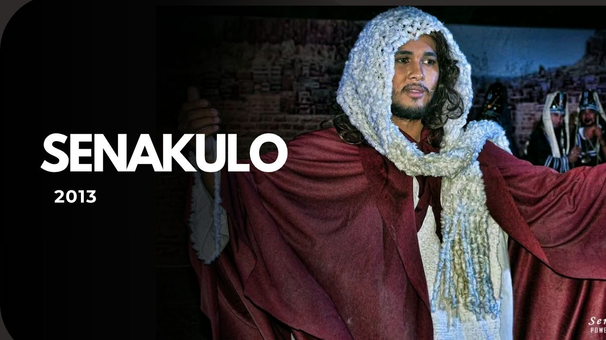
2013
Mga Kabanata sa Buhay ni Kristo
-
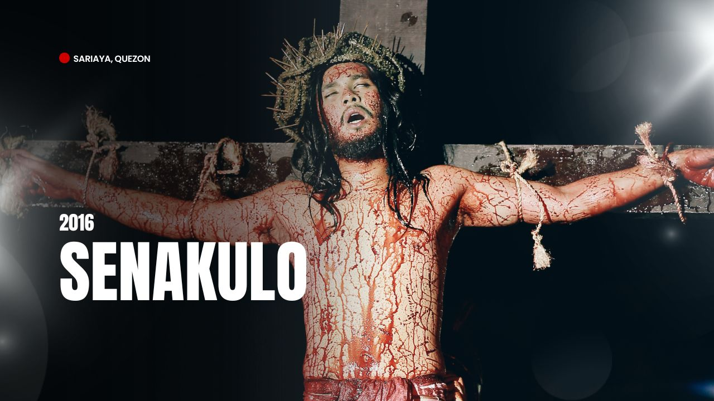
2016
Mga Kabanata sa Buhay ni Kristo
-
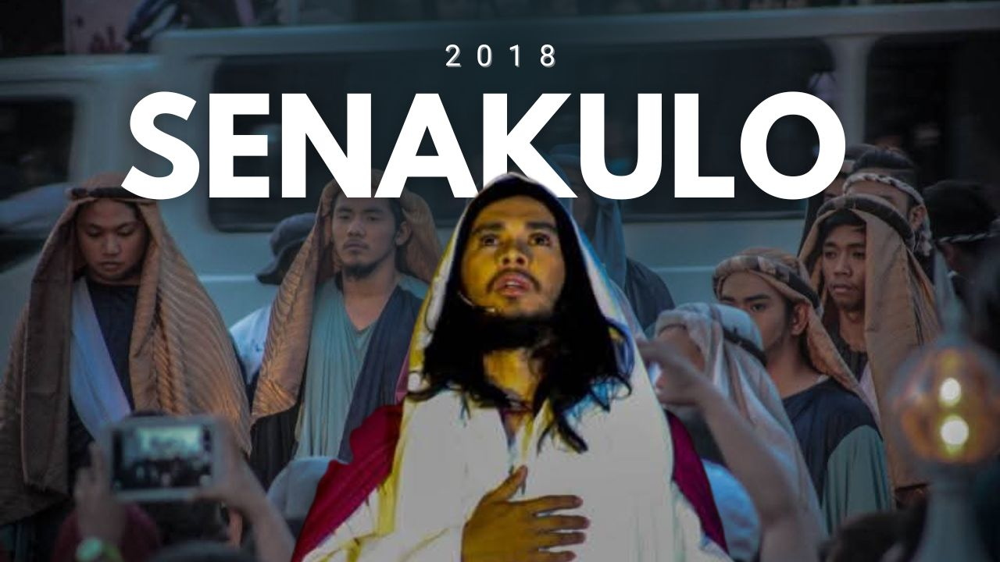
2018
Mga Kabanata sa Buhay ni Kristo
-
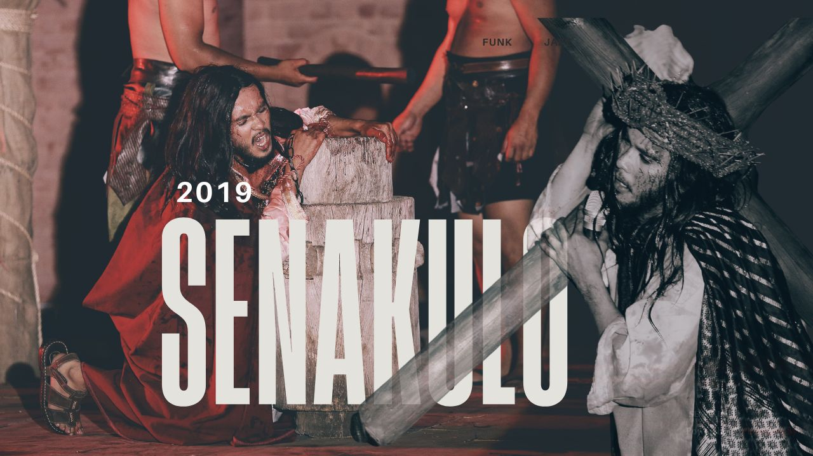
2019
Ang Pasyon ni Kristo
-
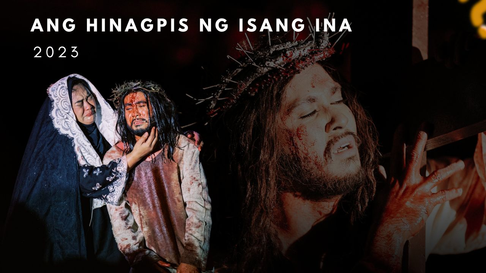
2023
Ang Hinagpis ng Isang Ina
-
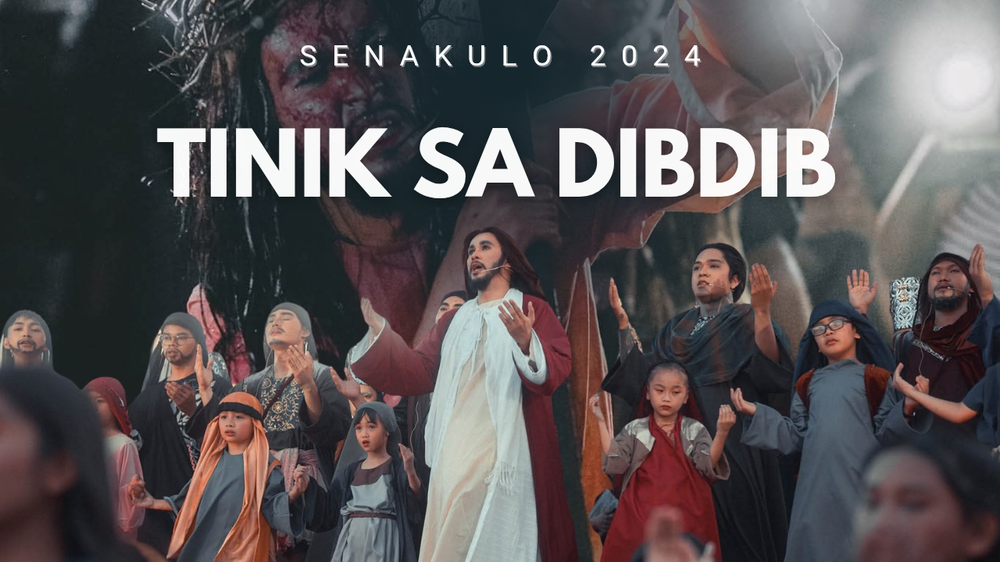
2024
Tinik sa Dibdib
-
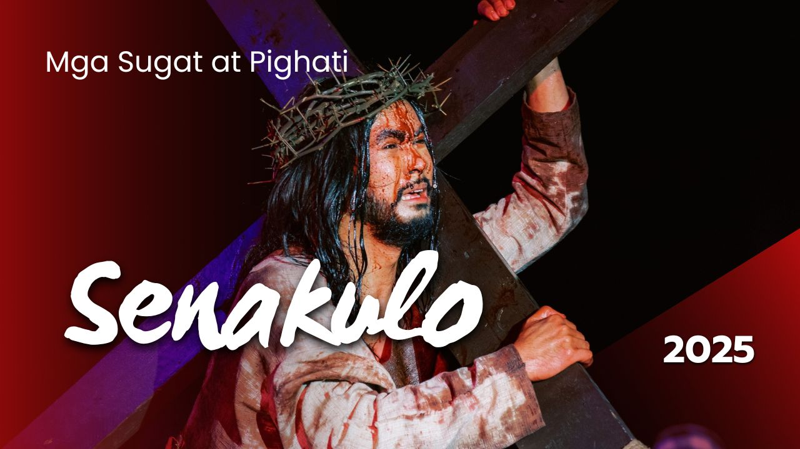
2025
Mga Sugat at Pighati
REHEARSAL
-
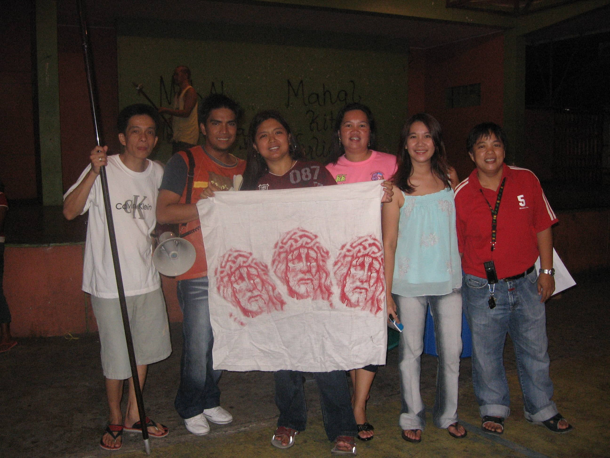
2007 - Where devotion begins
The 2007 senakulo rehearsal photos offers a glimpse into the beginnings of Senakulo Sariaya’s journey that is filled with passion, teamwork, and faith. Each captured moment reflects the performers’ heart and effort as they bring the story of the Passion to life, showing how every great performance starts with shared devotion and purpose.
-
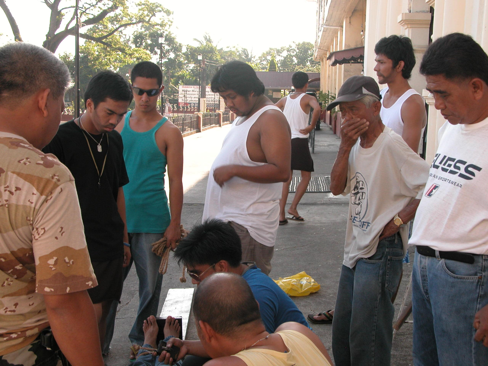
2008 - The Spirit of Participation
As they continue the tradition, the 2008 Senakulo rehearsal photos depict the participants’ strong dedication and active involvement in preparing for the annual Passion play. This images capture the performers’ discipline, cooperation, and devotion as they rehearse each scene with sincerity and purpose. The rehearsals reflect the community’s enduring commitment to preserving the religious cultural significance of the Senakulo tradition.
-
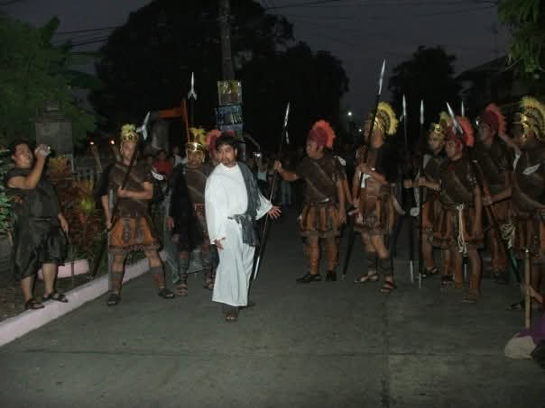
2009 - Building Faith Through Preparation
These 2009 rehearsal photos reveal the heart and hard work behind Sariaya’s Senakulo. From intense practice scenes to shared laughter among cast members, each moments shows the performers’ devotion and unity. Every rehearsal was not just a preparation, it was an act of faith that brought the story of the Passion closer to life.
-
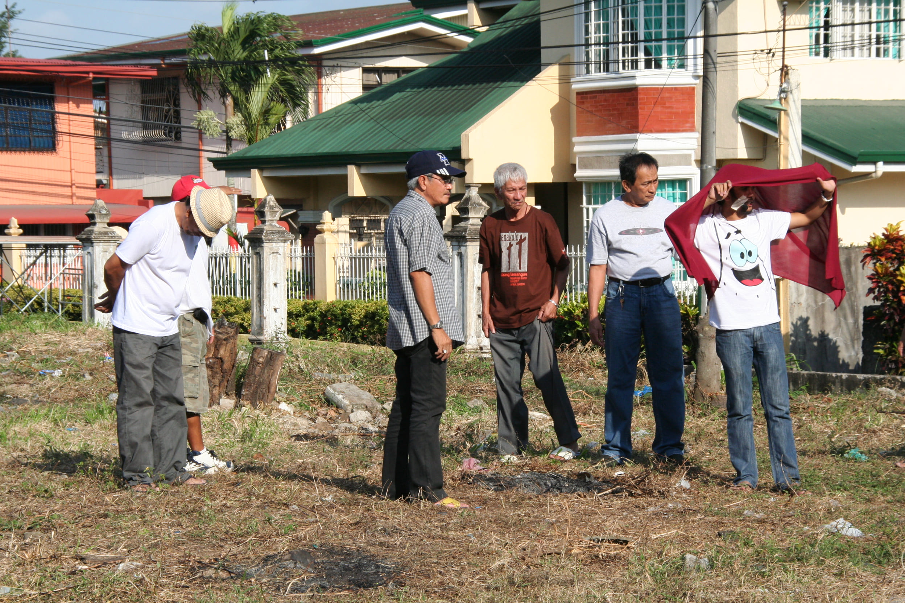
2010 - Behind the Passion
These few photos show the passion and teamwork behind Sariaya’s 2010 Senakulo. Every of practice reveals faith in action and the shared joy of bringing a sacred story to life.
-
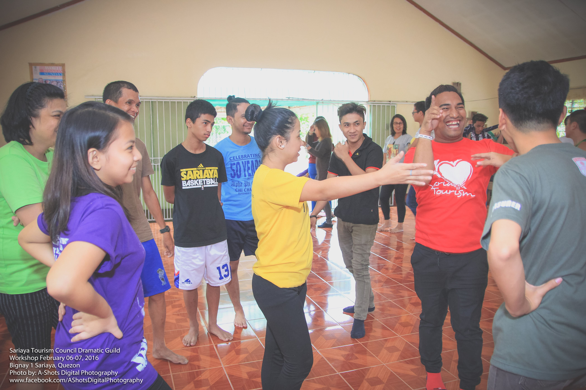
2016 - Commitment
The 2016 Senakulo rehearsals and workshop sessions highlight the disciplined preparation and strong camaraderie among Sariaya’s volunteer performers. These activities not only honed their artistic and interpretative skills but also fostered a deeper sense of unity and belonging. Through shared dedication, laughter, and faith, the participants built lasting bonds that transformed the group into a family devoted to keeping the sacred tradition of the Senakulo alive.